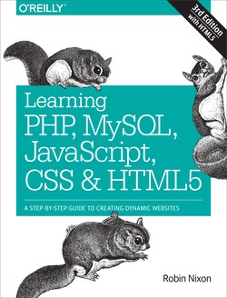

Learning PHP, MySQL, JavaScript, CSS & HTML5, 3rd Edition
Released June 2014
Publisher(s): O'Reilly Media, Inc.
ISBN: 9781491949467
Book description
Build interactive, data-driven websites with the potent combination of open-source technologies and web standards, even if you only have basic HTML knowledge. With this popular hands-on guide, you’ll tackle dynamic web programming with the help of today’s core technologies:
- PHP
- MySQL
JavaScript
CSS
HTML5
GET YOUR COPY